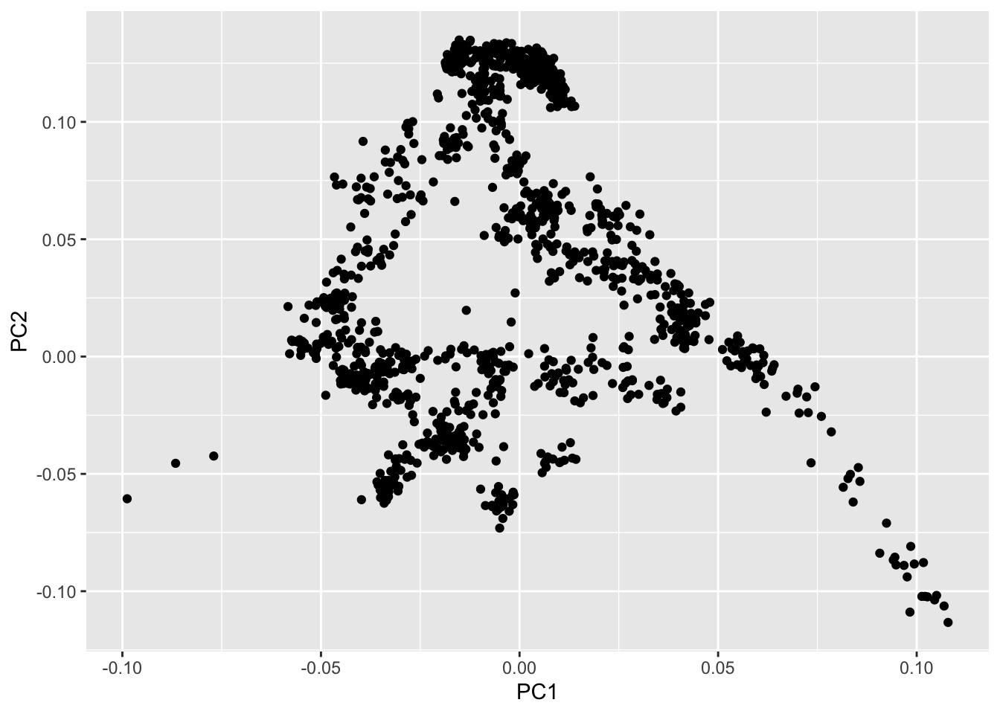
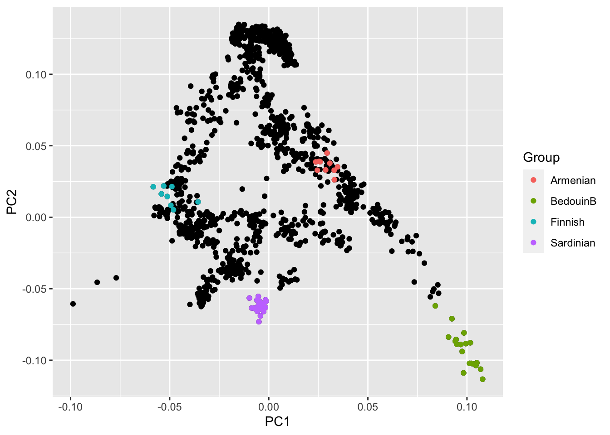
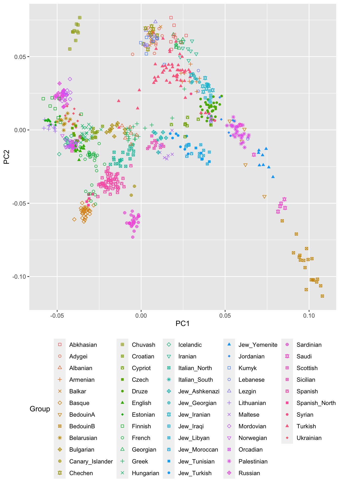
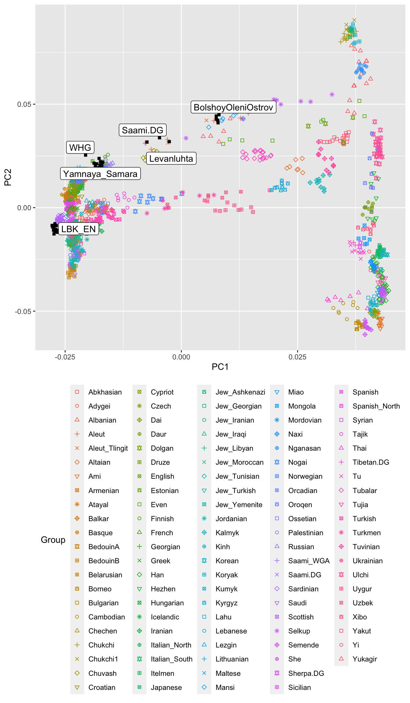
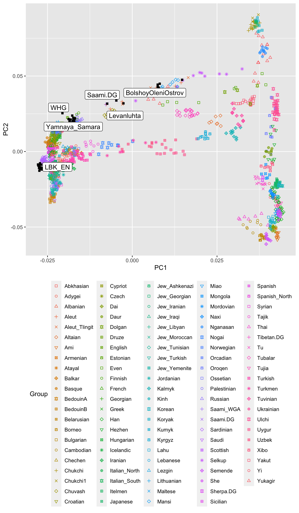

Principal Component Plots
In this exercise, we will explore two Principal Components analyses of human genetic variation in Eurasia.
We again need two libraries loaded:
library(magrittr)
library(ggplot2)Let’s load the two data files:
pcaDat <- readr::read_table("data/pca.WestEurasia.evec")
pcaDat2 <- readr::read_table("data/pca.AllEurasia.evec")The first column contains the name of each individual, the second and third the first and second principal component, and the last row a group label. To load this dataset with R, we use the readr::read_table function.
Exercise: Look at the two datasets by clicking on them under the Environment tab in the upper right pane in RStudio.
We can quickly plot the first two PCs for all individuals:
ggplot(pcaDat) + geom_point(aes(x = PC1, y = PC2))
which is not very helpful, because we can’t see where each population falls. We can highlight a few populations to get a bit more of a feeling:
ggplot(pcaDat) + geom_point(aes(x = PC1, y = PC2)) +
geom_point(
data = pcaDat %>% dplyr::filter(Group %in% c("Finnish", "Sardinian", "Armenian", "BedouinB")),
aes(x = PC1, y = PC2, color = Group)
)
Task: The details of this code aren’t too important. But you can probably easily see how to add more groups to highlight. Browse through the group names in the dataset (which you know how to do from the previous task) and pick a few more to highlight. Find out which populations mark the cornerstones of this PCA.
Showing all populations
OK, but how do we systematically show all the populations? There are too many of those to separate them all by different colors, or by different symbols, so we need to combine colours and symbols and use all the combinations of them to show all the populations.
populations <- readr::read_csv("data/WestEurasia.poplist.txt", col_names = F)$X1pcaDat %>%
dplyr::filter(Group %in% populations) %>%
ggplot() +
geom_point(aes(
x = PC1, y = PC2,
color = Group, shape = Group
)) +
scale_shape_manual(values = rep(0:18, len = 57)) +
theme(legend.position = "bottom")
Adding ancient populations
Of course, until now we haven’t yet included any of the actual ancient test individuals that we want to analyse.
We add the following ancient populations to this plot:
- Levanluhta (two individuals from Finland from the first millenium AD)
- BolshoyOleniOstrov (a group of 3500 year old individuals from Northern Russia).
- WHG (short for Western Hunter-Gatherers, about 8000 years ago)
- LBK_EN (short for Linearbandkeramik Early Neolithic, from about 6,000 years ago)
- Yamnaya_Samara, a late Neolithic population from the Russian Steppe, about 4,800 years ago.
The first two populations are from a publication on ancient Fennoscandian genomes (Lamnidis et al. (2018)), and are instructive to understand what PCA can be used for. The latter three populations are from two famous publications (Lazaridis et al. (2014), Haak et al. (2015)). It can be shown that modern European genetic diversity is formed by a mix of three ancestries represented by these ancient groups. To highlight these ancient populations, we plot them in black and using different symbols. While we’re at it, we should also add the population called “Saami.DG”:
ancient_populations <- c("Levanluhta", "BolshoyOleniOstrov", "WHG", "LBK_EN", "Yamnaya_Samara", "Saami.DG")
ggplot() +
geom_point(
data = pcaDat %>% dplyr::filter(Group %in% populations),
mapping = aes(
x = PC1, y = PC2,
color = Group, shape = Group
)
) +
geom_point(
data = pcaDat %>% dplyr::filter(Group %in% ancient_populations),
mapping = aes(
x = PC1, y = PC2
),
color = "black", shape = 15
) +
ggrepel::geom_label_repel(
data = pcaDat %>% dplyr::filter(Group %in% ancient_populations) %>%
dplyr::group_by(Group) %>%
dplyr::summarise(PC1 = mean(PC1), PC2 = mean(PC2)),
mapping = aes(
x = PC1, y = PC2, label = Group
)
) +
scale_shape_manual(values = rep(0:14, len = 57)) +
theme(legend.position = "bottom")
OK, so what are we looking at? This is quite a rich plot, of course, and we won’t discuss all the details here. I just want to highlight two things. First, you can see that most present-day Europeans are scattered in a relatively tight space in the center of a triangle span up by the WHG on the lower left, LBK_EN on the lower right (seen from European points) and by Yamnaya_Samara (top). Indeed, a widely-accepted model for present-day Europeans assumes these three ancient source populations for all Europeans (Lazaridis et al. (2014), Haak et al. (2015)).
The second thing that is noteworthy here is that present-day people from Northeastern Europe, such as Finns, Saami and other Uralic speaking populations are “dragged” towards the ancient samples form Bolshoy Oleni Ostrov. Indeed, a recent model published by us assumes that “Siberian” genetic ancestry entered Europe around 4000 years ago as a kind of fourth genetic component on top of the three other components discusseda bove, and is nowadays found in most Uralic speakers in Europe, including Finns, Saami and Estonians.
All-Eurasian PCA
We can make a similar plot using the all-Eurasian PCA that we have run:
populations <- readr::read_csv("data/AllEurasia.poplist.txt", col_names = F)$X1ggplot() +
geom_point(
data = pcaDat2 %>% dplyr::filter(Group %in% populations),
mapping = aes(
x = PC1, y = PC2,
color = Group, shape = Group
)
) +
geom_point(
data = pcaDat2 %>% dplyr::filter(Group %in% ancient_populations),
mapping = aes(
x = PC1, y = PC2
),
color = "black", shape = 15
) +
ggrepel::geom_label_repel(
data = pcaDat2 %>% dplyr::filter(Group %in% ancient_populations) %>%
dplyr::group_by(Group) %>%
dplyr::summarise(PC1 = mean(PC1), PC2 = mean(PC2)),
mapping = aes(
x = PC1, y = PC2, label = Group
)
) +
scale_shape_manual(values = rep(0:14, len = 108)) +
theme(legend.position = "bottom")
This PCA looks quite different. Here, we have all Western-Eurasian groups squished together on the left side of the plot, and on the right we have East-Asian populations. The plot roughly reflects Geography, with Northern East-Asian people such as the Nganasan on the top-right, and Southern East-Asian people like the Taiwanese Ami on the lower right. Here we can now see that the ancient samples from Russia and Finnland, as well as present-day Uralic populations are actually distributed between East and West, contrary to most other Europeans. This confirms that these group in Europe have quite a distinctive East-Asian genetic ancestry, and we found that it is best represented by the Nganasan (Lamnidis et al. (2018)).